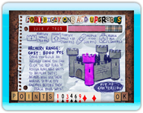

9 |
Migliorie / Negozio |
 |
 Fortificazione - rafforza e aumenta l'altezza delle mura del castello. Riparazione - ripara i danni subiti dal castello. Pozzo della conversione - consente di convertire le unità nemiche lasciandole cadere nel pozzo. Dopo un breve periodo di conversione, queste unità possono essere addestrate per aiutarti a difendere il castello. Tiro con l'arco - consente di addestrare gli arcieri che attaccheranno immediatamente gli invasori. Un numero elevato di arcieri ti consentirà di lanciare sempre più frecce a un ritmo maggiore. Bottega dei muratori - consente di addestrare gli operai per svolgere automaticamente lavori di riparazione durante la partita. Più operai possiedi, più veloci saranno i lavori di riparazione. Istituto di arti magiche - consente di insegnare ai maghi come lanciare formidabili incantesimi. Più maghi addestrerai, più incantesimi potrai lanciare e li potrai utilizzare in qualsiasi momento. Laboratorio di demolizione - consente di addestrare esperti in demolizioni per bombardare i tuoi nemici. Le bombe, una volta posizionate, dovranno essere attivate manualmente (si consiglia di attivarle al momento opportuno). |
 |
 |